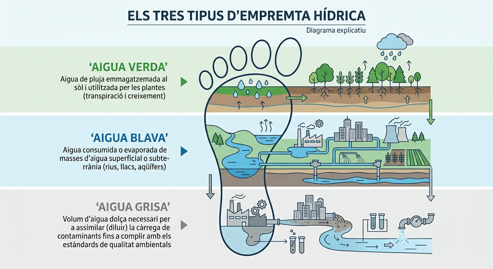

La petjada hídrica és un indicador ambiental
que quantifica el volum total d’aigua dolça utilitzada directa i indirectament per a la fabricació de productes o serveis. Aquesta mètrica no només mesura el consum, sinó també la contaminació associada, permetent avaluar la sostenibilitat ambiental, social i econòmica de les activitats humanes.
Els components clau de la petjada hídrica es divideixen en tres dimensions:
Aigua blava:
Volum d’aigua superficial i subterrània consumida o evaporada durant el procés.
Aigua verda:
Volum d’aigua de pluja emmagatzemada al sòl i consumida per la vegetació o cultius.
Aigua grisa:
Volum d’aigua dolça necessària per assimilar els contaminants generats fins a complir amb les normes de qualitat ambiental.
